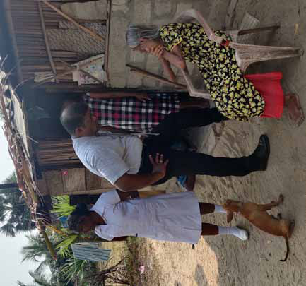
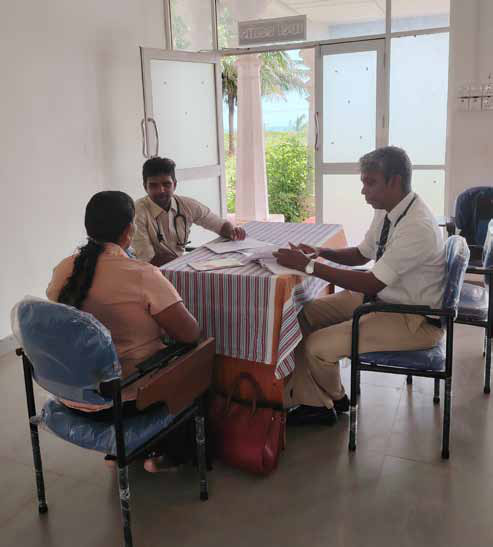
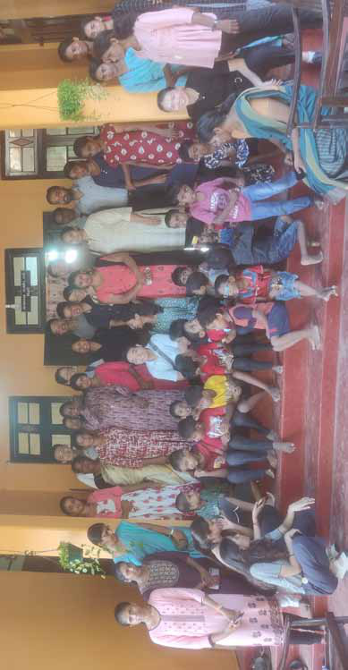
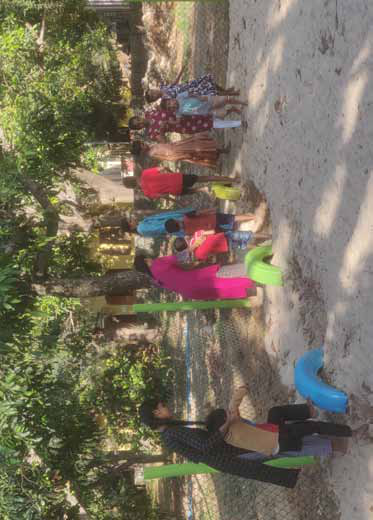

Healing in Jaffna: What the North Taught a Southern Doctor About Empathy
Healing in Jaffna: What the North Taught a Southern Doctor About Empathy
Jaffna Monitor hellojaffnamonitor@gmail.com 70 Healing in Jaffna: What the North Taught a Southern Doctor About Empathy BY: Dr. Shane Halpe Kondavil: A Masterclass in Compassionate Care When I first stepped into the Family Health Center (FHC) in Kondavil, Jaffna, I had no idea that this quiet, unassuming facility in Sri Lanka’s Northern Province would become one of the most formative classrooms of my career. It quickly revealed itself as a living model of what a family health center should be across the island. As a family physician from Wattala, I arrived with curiosity, humility, and not a word of Tamil. But what I lacked in language, I made up for through observation, empathy, and the willingness to listen with both my eyes and heart. And in return, FHC Kondavil didn’t just welcome me—it shaped me. It continues to shape not only my career but also my deeper understanding of what truly compassionate, community-rooted healthcare can look like. Family Health Centre – Kondavil

Jaffna Monitor hellojaffnamonitor@gmail.com 71 The Spirit of Family Medicine Under the thoughtful mentorship of Consultant Family Physician Dr. S. Kumaran, I began to see family medicine not just as a medical specialty, but as a living, breathing philosophy of care. At the Family Health Center in Kondavil, medicine transcended the conventional boundaries of diagnosis and prescription. Each patient encounter was rooted in context—care here meant understanding not only the illness, but the individual behind it. I learned to ask: Where does this patient come from? What are their daily struggles? How do their social, economic, and emotional realities shape their health? Dr. Kumaran demonstrated that true healing begins when we treat people, not just symptoms. It was a revelation—one that reshaped how I viewed my role as a physician and deepened my sense of responsibility to the communities I serve. The Family Health Center in Kondavil stood out as a true hub of integrated, community- oriented care. It wasn’t merely a place where people came to seek treatment—it was a proactive health ecosystem. Within its modest walls were a range of thoughtfully organized services: a dedicated space for counseling that offered emotional and psychological support; a healthy lifestyle clinic that promoted nutrition, exercise, and preventive habits; and a responsive outpatient department that managed everything from acute conditions to long-term follow-ups. What impressed me most was the center’s forward-thinking approach—it placed equal emphasis on prevention, early detection, and patient empowerment. Chronic disease screening was not an afterthought but a routine priority. Even the recordkeeping reflected this ethos: notes were handwritten with care, and duplicate copies were given to patients. This simple gesture not only bridged communication gaps but also cultivated a sense of mutual accountability and trust between provider and patient. It was a subtle reminder that healthcare works best when it’s a shared journey. From pregnant women navigating the uncertainties of motherhood to elderly individuals living in quiet isolation, the Family Health Center in Kondavil opened its doors to everyone. No one was left behind. The center’s local staff, fluent in Tamil and deeply familiar with the community’s culture and rhythms, ensured that every patient was heard and understood without barriers. One of the most striking practices I observed was the routine home visits—a seemingly simple act, but one with transformative power. Visiting a patient in their own living space offered a window into their world: their support systems, daily challenges, and the unspoken truths that don’t always emerge within clinic walls. It gave every clinical decision a deeper layer of meaning. In Ariyalai village: Family physician and community health worker engage with an elderly woman — community-centred care in action.

Jaffna Monitor hellojaffnamonitor@gmail.com 72 What moved me most was the truly holistic nature of care. Health here wasn’t treated in isolation. Emotional suffering, substance dependency, poverty, and domestic dynamics—all were considered vital parts of the clinical picture. Even the smallest details—a hesitant glance, worn-out clothing, or the way someone sat— were interpreted with empathy and care. The Family Physician’s intimate understanding of the local environment allowed for care that was not only personalized but profoundly human. Reaching the Margins: The Rural Clinic in Myliddy My journey through Sri Lanka's Northern Province then led me to Myliddy, a remote village nestled on the northern coast. There, within the walls of a small Primary Medical Care Unit, I witnessed medicine in its most raw, stripped-down— yet profoundly impactful— form. The facility itself was basic: no examination bed, minimal privacy. Yet, patients—a tide of mostly elderly and economically vulnerable individuals— came in droves. Their ailments painted a vivid picture of rural life: pervasive musculoskeletal pains, chronic gastritis, reproductive issues, and the tell-tale oral lesions from betel chewing. Delivering Care Against the Odds Despite the glaring limitations—a sparse supply of medications and a lean staff—care was delivered with an undeniable sincerity that touched me deeply. We focused on empowering patients, educating them on crucial aspects of posture, nutrition, cancer screening, and essential self-care. However, the stark reality of inadequate infrastructure hit hard. I distinctly remember two cases: one of recurrent miscarriage, another of persistent vaginal candidiasis. Providing dignified care in such an environment was a painful, constant reminder that healthcare equity truly begins with fundamental facilities. It highlighted the invisible barriers that often stand between patients and the quality care they deserve. Clinical consultation at Myliddy Primary Medical Care Unit

Jaffna Monitor hellojaffnamonitor@gmail.com 73 What stayed with me most, however, was the unwavering dedication of the young Medical Officer in Charge. Tireless and committed, she had become the lifeline of that fragile clinic. Yet behind her calm efficiency lay a silent struggle—managing an overburdened facility with minimal support, and facing an impossible choice: to pursue her long-delayed postgraduate dreams or stay behind, unsure of who would carry the torch if she left. Her dilemma reflected a larger, systemic crisis. In a country where over 4,600 health professionals have migrated in recent years, rural outposts like Myliddy are being stretched to breaking point. Her voice—firm, yet laced with worry— echoed the urgent need to rethink how we support, retain, and uplift those who choose to serve in the most underserved corners of our healthcare system. The Quiet Revolution in Neurorehabilitation Another chapter of my Northern journey unfolded at Green Memorial Hospital in Manipay, where Dr. S. Kumaran introduced me to a remarkable neurorehabilitation unit. This haven for children with cerebral palsy, autism spectrum disorder, genetic syndromes, and more was driven by a multidisciplinary team—and powered by hope. The unit offered free, intensive therapy. Structured play, self-care training, and creative expression were woven into daily routines. A sensory garden helped children with touch sensitivities. Cultural events and dance performances celebrated their progress. Parental support, too, was prioritized with workshops and one-on-one counseling. What I witnessed here went beyond rehabilitation—it was a quiet resurrection of hope, self-worth, and human potential. I saw children once thought to be limited begin to flourish, their parents rediscovering confidence with every small milestone. Therapists moved with unwavering patience, not merely treating conditions but nurturing possibilities. In those moments, I was reminded that the true calling of medicine is not only to mend the body, but to restore Children and staff of Neuro rehabilitation Clinic at Green Memorial Hospital-Manipay

Jaffna Monitor hellojaffnamonitor@gmail.com 74 lives—to help people believe in themselves again. Facing Darkness with Light: Mental Health and Prison Rehabilitation At the Family Health Center in Kondavil, I witnessed a rare but vital integration of mental health into primary care. A dedicated clinical psychologist served patients grappling with grief, depression, psychosexual concerns, and post-traumatic stress disorder—conditions often left unspoken in many Sri Lankan communities. Through a combination of in- person counseling, telemedicine consultations, and community-based group therapy, the center created a safe space for healing the mind as well as the body. It was here that I came to appreciate mental health not as a separate discipline, but as an essential pillar of holistic care. Rehabilitation Behind Bars: A Glimpse of Hope in Jaffna Prison This commitment to emotional well-being extended even beyond the clinic walls—to places often forgotten in discussions of public health. At Jaffna Prison, I encountered a profound and often overlooked dimension of medicine: healing behind bars. Many of the inmates I met were not hardened criminals, but individuals caught in cycles of poverty, addiction, and unaddressed trauma. There, within the stark confines of prison life, they were receiving primary medical care, guided meditation sessions, and vocational training— all designed to support rehabilitation rather than simply enforce punishment. Substance abuse rehabilitation was a major focus of the prison’s efforts. Drawing from a holistic framework, the program combined individual and group counseling, skills- building workshops, and psychosocial support. For young men in the Northern Province battling addiction, this model offered a second chance. The work being done within those walls was quietly revolutionary, targeting not just the symptoms of substance abuse, but the underlying causes—displacement, unemployment, familial breakdown—and charting a new course for recovery and reintegration. What struck me most was the ethos of the entire system: one of restoration, not retribution. These were not isolated interventions—they were threads in a broader tapestry of hope. In a region still healing from the scars of war, this was a bold and compassionate attempt to break cycles of suffering and offer light in places long overshadowed by darkness. A Day of Listening One quiet morning back in Kondavil, I was An outdoor therapeutic neurodevelopmental activity for the differently abled children

Jaffna Monitor hellojaffnamonitor@gmail.com 75 asked once more to step in and assist at the Family Health Center. My Tamil was still hesitant, my vocabulary limited—but I had learned to listen with more than just words. A temple caretaker came in, worn down by fever and worry, convinced he needed antibiotics. A simple explanation and a touch of reassurance were enough to ease his mind—a quiet triumph of trust over unnecessary medication. An elderly woman shuffled in with chronic knee pain, her body tired but her spirit defiant. She had outlived war, loss, and hardship, and needed more than analgesics—she needed to be seen, to be acknowledged as a reservoir of resilience. Then came a young father, sleepless and anxious, troubled not by disease but by a habit—spicy late-night snacks that disrupted his rest. A gentle dietary intervention brought him relief, proving once again that not all suffering requires a pill. A woman, nervous and hopeful, spoke of her struggle to conceive. Her burden was heavy— but so was the silence of her partner. With empathy, we reminded her that fertility is a shared journey, not a solitary burden. A restless teenage boy followed, his energy misread as a disorder. Suspected of ADHD, he was, in fact, a passionate karate student— bursting with potential and desperate for validation. Finally, a schoolteacher—poised, educated, and diabetic—sat unaware of the silent damage progressing within her. Her blood reports hinted at looming complications, but she had never been told what they meant. With careful guidance, we began the journey of lifestyle change—before medication ever became necessary. Each encounter that day reaffirmed a truth I had come to cherish: family medicine is not about the drama of emergencies or the prestige of complex procedures. It is about presence. It is about seeing the whole person, not just the illness—choosing conversation over prescription, insight over assumption. In Kondavil, I learned that healing often begins not with action, but with listening—with showing up fully, even when words fall short. The Future We Must Build Undoubtedly, my time in Northern Sri Lanka both challenged and transformed me. I witnessed a model of healthcare rooted in trust, compassion, and continuity—despite glaring gaps in infrastructure and support. The spirit of family medicine is alive, but its foundation urgently needs strengthening. If we are to build resilient health systems, we must invest in rural clinics, empower local staff, expand community outreach, and address the growing crisis of professional migration. After three decades of brutal war, the North is healing—steadily and with quiet strength. But for it to truly thrive, it needs our collective commitment. From Kondavil to Myliddy, from prison wards to playrooms, family medicine in Jaffna is not merely surviving—it is reshaping what it means to care. The government must also rise to the occasion by supporting these unwavering medical professionals and prioritizing the development of essential healthcare infrastructure. About the author: Dr. Shane Halpe is a Senior Registrar in Family Medicine.